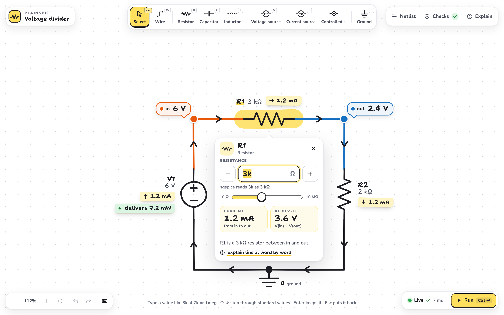
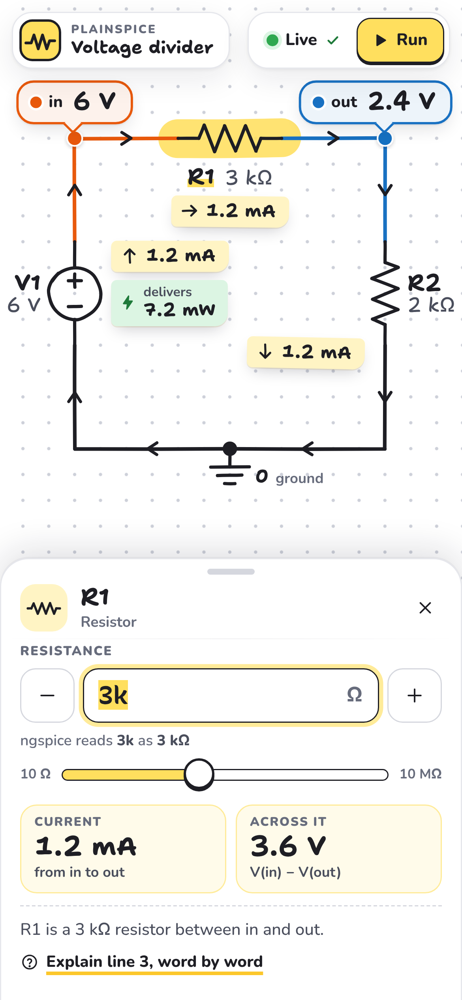
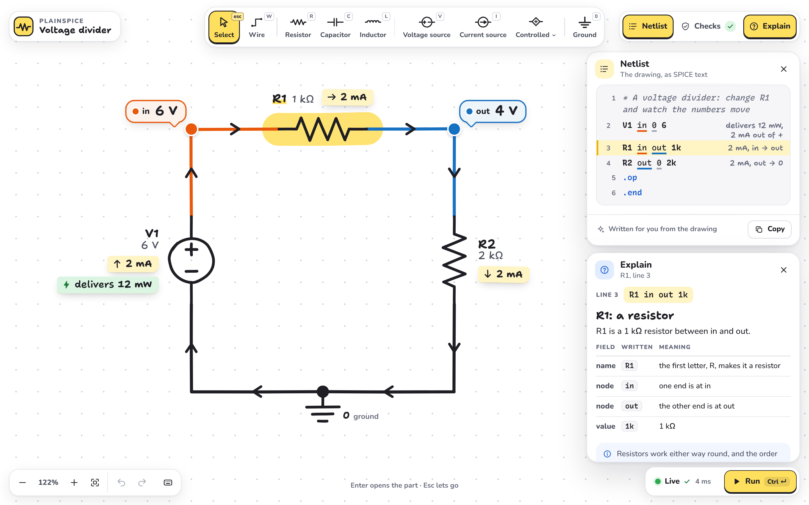
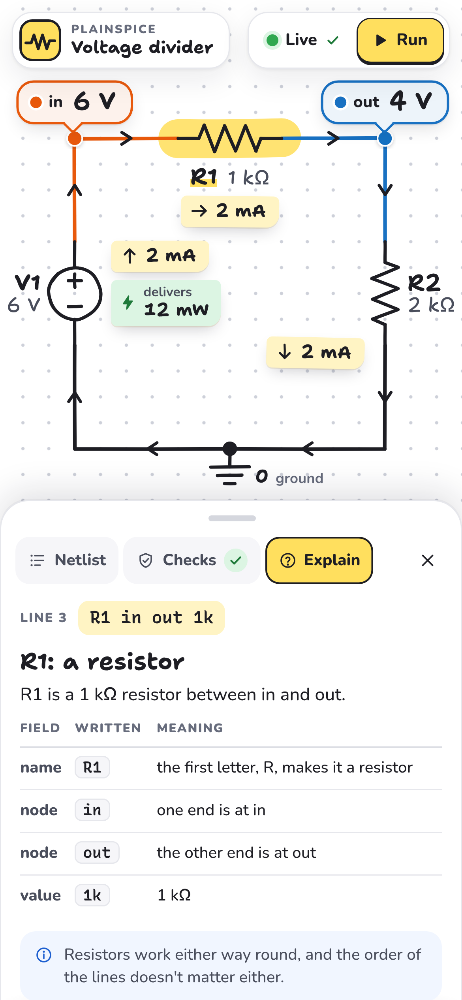
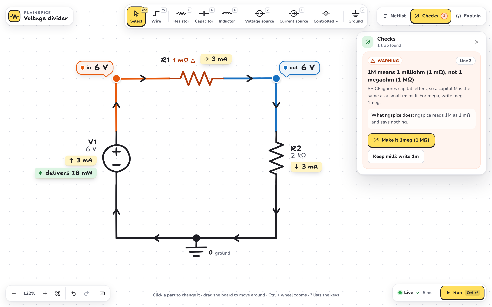
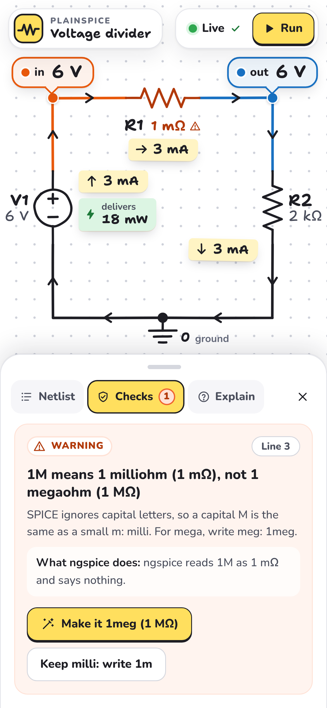

Milestone 2 makes PlainSpice look and work like a real simulator: the circuit in the middle, parts to place,
results drawn on the wires, and the netlist, checks and explanations in panels you open when you want them.
Each direction below is a clickable prototype running real ngspice in your browser: click R1 and change its
value to watch the numbers move. Try each on a computer and on a phone, then pick one.
Tarık chose Notebook: the checkpoint
The Notebook look, built for real, on the dependent-source circuits of “Thévenin Equivalent with Dependent Sources”:
drawn from the netlist, solved live by ngspice, with the named parts toolbar and its hint line, Ctrl+K and the status
line, and the handwriting / plain font setting. Try it on a computer and on a phone. On a phone, “As in the video”
shows the drawing the usual way round: both views side by side.
More screens: changing R1, the panels, a beginner trap

Changing R1

Phone

Netlist and Explain panels

Phone

A beginner trap (R1 = 1M)

Phone
These are prototypes for choosing a direction. What works: the first circuit, solved by real ngspice; changing
any of its values with live results; the toolbar and its keys; the Netlist, Checks and Explain panels with the
real checks and explanations; the 1M trap and its fix; undo and redo. Not yet: parts you place are drawn and can
be moved, but they are not wired into the netlist or simulated, and typing in the netlist does not change the
drawing. That is what gets built next, in the direction you choose. Everything that works today in
PlainSpice (the checks, the explanations, share links, offline use, accessibility) stays.
The automatic layout that will draw any netlist is already working: see
every example circuit drawn from its netlist.